Capítulo 2. Arquiteturas em Contexto: A Reorientação da Engenharia de Software
O capítulo anterior introduziu o conceito de arquitetura de software e ilustrou seu poder no estabelecimento da World Wide Web contemporânea. Também mostrou como a arquitetura de software fornece uma base técnica para a exploração da noção de famílias de produtos. Este capítulo mostra como a arquitetura de software se relaciona com os conceitos de engenharia de software que tradicionalmente são os mais proeminentes.
O que emerge dessa consideração é uma reorientação desses conceitos para longe de sua compreensão típica, pois o poder da arquitetura exige primazia do lugar. Como resultado, o próprio caráter das atividades-chave de engenharia de software, como análise de requisitos e programação, é alterado e as abordagens técnicas adotadas durante diversas atividades de engenharia de software são alteradas.
O foco deste capítulo é mostrar o papel da arquitetura em todo o setor de engenharia de software, então é um pouco superficial — a maioria dos principais temas da engenharia de software é discutida, mas cada tema individual tem apenas algumas páginas. Capítulos subsequentes abordarão os pontos principais em detalhes, tratando-os com grande detalhe. O leitor será capaz de entender o papel da arquitetura de software no contexto mais amplo do desenvolvimento, e poderá aplicar as ideias em termos amplos, mas sem as técnicas e ferramentas específicas abordadas nos capítulos seguintes, a aplicação eficaz das ideias será difícil de alcançar.
Esboço do Capítulo 2
COMPREENSIÕES FUNDAMENTAIS
Existem três entendimentos fundamentais de arquitetura, cujo reconhecimento ajuda a situar a arquitetura em relação ao restante da engenharia de software:
Por arquitetura, entendemos o conjunto de decisões principais de design tomadas sobre um sistema; é uma caracterização da essência e dos elementos essenciais da aplicação. Voltando à analogia com os edifícios discutidos no início do Capítulo 1, é evidente que todo edifício tem uma arquitetura. Isso não quer dizer que todo edifício tenha uma arquitetura honrosa, elegante ou eficaz: Infelizmente, muitos edifícios apresentam arquiteturas que não servem aos ocupantes e envergonham seus projetistas. Mas esses edifícios têm arquitetura, tanto quanto os edifícios belos e elegantes que são um prazer de ver e de trabalhar. Assim é com software. A estrutura fundamental de uma aplicação pode ser caracterizada, e as principais decisões de projeto tomadas durante seu desenvolvimento podem ser definidas. Por exemplo, como descrito no capítulo anterior, a arquitetura da World Wide Web é caracterizada pelo conjunto de decisões referido como estilo arquitetônico REST. O script shell Unix que vimos no capítulo anterior tem uma arquitetura caracterizada pelo estilo pipe-and-filter. Todas as aplicações têm arquiteturas porque todas resultam de decisões-chave de design.
A contribuição dessa observação é que ela imediatamente levanta questões: De onde veio a arquitetura de uma aplicação? Como essa arquitetura pode ser caracterizada? Quais são suas propriedades? É uma "boa arquitetura" ou uma "arquitetura ruim"? Será que suas falhas podem ser facilmente corrigidas?
A segunda compreensão decorre naturalmente da primeira: toda aplicação tem um arquiteto, embora talvez não seja conhecido por esse título ou reconhecido pelo que é feito. [3] O arquiteto é a pessoa ou, na maioria dos casos, o grupo que toma as decisões principais sobre a aplicação, que estabelece e (espera-se) mantém o projeto fundamental. Assim como no primeiro entendimento, essa observação também levanta imediatamente algumas questões, incluindo: Os arquitetos estavam sempre cientes de quando tomaram uma decisão fundamental de design? Eles conseguem articular essas decisões fundamentais de design para outros? Eles conseguem manter a integridade conceitual do design ao longo do tempo? Alternativas foram consideradas nos vários pontos de decisão?
A terceira compreensão é a mais profunda e que serve de foco para a maior parte deste capítulo. Arquitetura refere-se à essência conceitual de uma aplicação, às principais decisões sobre seu design, às abstrações principais que caracterizam a aplicação. Se concordar que toda aplicação tem uma arquitetura, então surge a questão: de onde ela veio? Como isso muda?
Em uma compreensão simplista, tradicional e imprecisa, a arquitetura é um produto específico de uma fase específica do processo de desenvolvimento que sucede a identificação de requisitos e que precede o projeto detalhado. Em processos elaborados de cascata de engenharia de software, ou no modelo espiral, tais fases são frequentemente explicitamente rotuladas, usando termos como "projeto preliminar", "design de alto nível", "design de produto" ou "design de produto de software". Pensar na arquitetura como produto de tal fase — especialmente uma fase inicial — confina a arquitetura a consistir em apenas algumas decisões de design, um subconjunto daquelas que caracterizam plenamente a aplicação e, infelizmente em muitos casos, às decisões mais propensas a serem contrariadas por decisões subsequentes. Embora a criação e manutenção da arquitetura possam começar ou ter destaque especial em uma fase específica, essas atividades permeiam o processo de desenvolvimento.
Para mostrar como a arquitetura de software se relaciona com o panorama tradicional mais amplo da engenharia de software, discutimos a arquitetura no contexto das fases e atividades tradicionais da engenharia de software. Para conveniência e familiaridade, organizamos a discussão a seguir em torno do processo nocional de cascata. Nossa discussão se baseia no reconhecimento de que a arquitetura de um sistema deve resultar de uma atividade consciente e deliberada por um indivíduo ou grupo reconhecido como responsável pela arquitetura. Essas situações infelizes em que a arquitetura não é explícita e não é resultado de escolha ou esforço consciente apenas refletem práticas de engenharia ruins.
REQUISITOS
A consideração correta e adequada da arquitetura começa desde o início de qualquer atividade de desenvolvimento de software. Noções de estrutura, design e solução são bastante apropriadas durante a atividade de análise de requisitos. Para entender o motivo, é apropriado começar com uma breve exploração da abordagem tradicional da engenharia de software. Contrastamos essa visão com a prática no desenvolvimento de software real, a prática na arquitetura (de construção), e então consideramos o papel do design e da tomada de decisão na fase inicial da concepção da aplicação.
No modelo em cascata, de fato na maioria dos modelos de processo, a fase inicial das atividades é focada no desenvolvimento dos requisitos para uma aplicação — a declaração do que a aplicação deve fazer. A visão acadêmica tradicional da análise e especificação de requisitos é que a atividade, e o documento de requisitos resultante, devem permanecer imaculados por qualquer consideração para um projeto que possa ser usado para satisfazer os requisitos identificados. De fato, alguns pesquisadores da comunidade de requisitos são bastante veementes nesse ponto: "A parte central deste artigo esboça uma abordagem para análise e estruturação de problemas que visa evitar a atração magnética da orientação à solução" (Jackson 2000); citações semelhantes podem ser encontradas em toda a literatura. (Trabalhos mais recentes em engenharia de requisitos se afastaram desse ponto de vista, como será discutido ao final do capítulo.)
O foco em isolar requisitos e atrasar qualquer pensamento de solução remonta à Antiguidade. Pappus, o matemático grego do século IV, escreveu: "Na análise, começamos pelo que é necessário, tomamos como certo e tiramos consequências disso, até chegarmos a um ponto que podemos usar como ponto de partida na síntese." Síntese é aqui a atividade de design, ou solução. Mais recentemente, o matemático americano do século XX George Polya escreveu um tratado influente sobre "Como Resolver Isso" (Polya 1957). A essência de sua abordagem é a seguinte.
Em ambas as abordagens, uma compreensão completa dos requisitos precede qualquer trabalho em busca de solução. A maioria dos escritores de engenharia de software adotou essa posição essencial, como vimos na citação acima, e argumentou que qualquer pensamento sobre como resolver um problema deve seguir uma exploração completa e compreensão dos requisitos.
Uma das histórias usadas para ilustrar a sabedoria dessa abordagem diz respeito ao desenvolvimento das máquinas de lavar. Se, ao projetar máquinas de lavar, simplesmente automatizássemos a solução manual de antigamente, teríamos máquinas que batiam roupas nas pedras à beira do rio. Em contraste, focar nos requisitos (ou seja, limpar roupas) independentemente de qualquer "atração magnética da orientação à solução" permite obter soluções novas e criativas: tambores giratórios com agitadores.
Essa visão ideal de isolar os requisitos primeiro e depois projetar em seguida contrasta substancialmente com a prática típica da engenharia de software. Embora não seja algo sobre o qual desenvolvedores escrevem artigos acadêmicos, a prática indica que, além do desenvolvimento contratado pelo governo e algumas aplicações especializadas, documentos de requisitos substantivos raramente são produzidos antes do desenvolvimento. A análise de requisitos, que supostamente produz documentos de requisitos, geralmente é feita de forma rápida e superficial, se é que é feita de forma rápida. Explicações para tal desvio da prática real em relação às supostas "melhores práticas" incluem pressões de cronograma e orçamento, processos inferiores, denegração das qualificações e treinamento dos engenheiros responsáveis, entre outros.
Acreditamos que as verdadeiras razões são diferentes, e que essas diferenças começam a indicar o papel da arquitetura e das considerações de solução logo no início do processo de desenvolvimento. As diferenças têm a ver com limitações humanas no raciocínio abstrato, na economia e, talvez mais importante, na "evocação".
Considere mais uma vez a analogia com os prédios. Quando decidimos que precisamos de uma nova casa ou apartamento, ou de uma modificação em nossa residência atual, não começamos um processo de raciocínio sobre nossas necessidades independentemente de como elas possam ser satisfeitas. Pensamos, e falamos, em termos de quantos cômodos, que tipo de janelas, se queremos um fogão a gás ou elétrico — não em termos de "meios para oferecer abrigo contra o mau tempo, meios para garantir privacidade, meios para fornecer iluminação adequada, meios para preparar comida quente" e assim por diante. Temos ampla experiência com moradia, e essa experiência nos permite raciocinar rápida e articuladamente sobre nossos desejos, além de fazer análises aproximadas eficientes de custos e cronogramas para atender às necessidades. Ver outras casas ou prédios inspira nossa imaginação e estimula pensamentos criativos sobre o que "pode ser". Nossas necessidades começam a abranger estilos específicos de casas que achamos charmosos ou inovadores. Assim, nosso entendimento da arquitetura da nossa moradia atual e da arquitetura das moradias de outras pessoas nos permite visualizar nossas "necessidades" de uma forma que provavelmente levará à sua satisfação (ou revisão para baixo até a realidade!)
Assim é com software. Especificar requisitos independentemente de qualquer preocupação sobre como esses requisitos podem ser atendidos leva à dificuldade até mesmo de articular os requisitos. Exceto por domínios limitados, como a análise numérica, é excepcionalmente difícil raciocinar em termos puramente abstratos. Sem referência às arquiteturas existentes, torna-se difícil avaliar praticidade, cronogramas ou custo. Ver o que pode ser feito em outros sistemas, por outro lado, que tipo de interfaces de usuário estão disponíveis, do que o novo hardware é capaz, que tipo de serviços podem ser fornecidos, evoca "requisitos" que refletem nossa imaginação e, ao mesmo tempo, são fundamentados em compreensões razoáveis de possibilidade. A prática atual reflete essa abordagem, mostrando a praticidade de raciocinar sobre estrutura e solução lado a lado com os requisitos.
Essa experiência observada com a prática de software é consistente com a encontrada em outras disciplinas de engenharia. Henry Petroski, o popular cronista da história moderna da engenharia, observou que o fracasso é o motor da engenharia e a base da inovação. Ou seja, inovação e novos produtos surgem da observação das soluções existentes e suas limitações. A referência a esses projetos anteriores faz parte intrinsecamente do trabalho para novas soluções e produtos.
O Desenvolvimento dos Zíperes
O zíper quase onipresente seguia um caminho típico de desenvolvimento de engenharia. Em vez de partir de uma especificação funcional sem design — algo como "meios para unir bordas de uma jaqueta" — o zíper surgiu no início dos anos 1900 como um sucessor incremental de uma longa linha de invenções patenteadas. Os primeiros desses remontam ao problema de abotoar botas de cano alto. Do fecho C-curity de gancho e olho ao Plako, ao gancho oculto e depois aos ainda comuns fechos aninhados em forma de copo que chamamos de zíperes, a história é de invenções repetidas, fracassos e novas inovações. Além dos desafios técnicos para fazer um fecho funcionar de forma confiável e esteticamente aceitável, os desenvolvedores do zíper também enfrentaram o desafio igualmente desafiador de criar demanda pelo produto.
Henry Petroski conta a história em detalhes em A Evolução das Coisas Úteis (Petroski 1992). Ele conclui seu capítulo sobre o zíper com a seguinte percepção: "... Como a forma de muitos artefatos agora familiares, o do que passou a ser conhecido como zíper certamente não seguia diretamente da função. A forma claramente seguiu da correção de falha após falha."
Da mesma forma, se considerarmos o comportamento das corporações, ou especialmente dos capitalistas de risco, vemos um foco desde o início em estruturas e projetos, em vez de requisitos. Ou seja, não se aborda com sucesso um investidor de risco e simplesmente enumera uma grande lista de requisitos para algum produto. Requisitos não criam valor; Produtos têm. Novos empreendimentos bem-sucedidos são iniciados com base em uma possível solução — possivelmente até sem uma ideia clara de qual necessidade ela pode estar atendendo. As organizações de marketing dentro das empresas têm como missão a responsabilidade de alinhar produtos existentes às necessidades, criar necessidades ou, especialmente, identificar como os produtos existentes precisam ser modificados para atender às necessidades emergentes dos clientes. Em tudo isso, solução e estrutura são parceiros iguais com requisitos em uma conversa sobre necessidades. As observações centrais desta reflexão são:
A conclusão simples, então, é que a análise dos requisitos e a consideração do design — preocupando-se com as decisões da arquitetura — são naturalmente e adequadamente perseguidas de forma cooperativa e contemporânea.
O ponto de partida para uma nova atividade de desenvolvimento inclui, portanto, o conhecimento do que existe agora, como os sistemas existentes falham ou deixam de fornecer tudo o que se deseja, e o conhecimento do que nesses sistemas pode ou não ser alterado. Portanto, de muitas maneiras, as arquiteturas atuais determinam os requisitos. De fato, os requisitos podem ser pensados como a articulação das melhorias necessárias nas arquiteturas existentes — mudanças desejadas nas principais decisões de projeto das aplicações atuais. Arquiteturas fornecem um referencial, um vocabulário, uma base para descrever propriedades e uma base para análise eficaz. Novas arquiteturas podem ser criadas com base na experiência e melhoria em arquiteturas já existentes.
A objeção exagerada a essa abordagem é que ela limitará a inovação e guiará o desenvolvimento por caminhos infrutíferos. Afinal, esse é o ponto da história da máquina de lavar mencionada antes. O problema é que, embora a anedota seja divertida, ela não reflete como as máquinas de lavar modernas foram desenvolvidas. Os engenheiros da Maytag não começaram apresentando requisitos abstratos para a "remoção de partículas com mais de n micrômetros de tecido composto por fibras de algodão, para um nível efetivo de apenas k partículas residuais por grama de tecido após t segundos de processamento." Na verdade, a história mostra uma progressão incremental de máquinas que se baseiam em grande parte na automação de ações antes humanas, mas com avanços inovadores.
Os desenvolvedores, no entanto, precisam se preocupar com a visão limitada pelos projetos atuais. Uma analogia usada pelos professores David Garlan e Mary Shaw reforça bem o ponto: para subir ao topo de uma casa, pode-se usar uma escada. Para subir até o topo de um pequeno prédio, pode-se usar uma escada para caminhão de bombeiros. Mas para subir ao topo de um arranha-céu, uma escada de qualquer tipo será insuficiente; um elevador (que não tem relação física com uma escada) é eficaz. Para ascender à lua é necessário uma tecnologia totalmente diferente. Nessa analogia, o conceito de ascensão é constante entre as diferentes situações, mas os detalhes das situações acabam implicando a necessidade de arquiteturas de soluções distintamente diferentes.
O ponto é este: predecessores, ou seja, arquiteturas existentes, fornecem a base mais segura para a grande maioria dos novos desenvolvimentos; nessas situações, os requisitos devem ser expressos usando a terminologia e os conceitos estruturais dos sistemas existentes. Em situações em que um predecessor adequado ("físico") é desconhecido, predecessores conceituais ou analogias (por exemplo, "coisas usadas antes para ascender") podem fornecer uma base terminológica para descrever as novas necessidades, mas é preciso ter cautela ao extrair quaisquer noções arquitetônicas desses predecessores. Predecessores conceituais podem fornecer uma visão, mas frequentemente oferecem pouca ajuda além disso.[4]
Talvez o mais perigoso seja o chamado desenvolvimento greenfield: um para o qual não existe um predecessor arquitetônico imediato. Nesses casos, a tentação é acreditar que um novo terreno conceitual está sendo quebrado e, portanto, não é necessário ou deve ser feito esforço para examinar sistemas e arquiteturas existentes para estruturar o desenvolvimento. O risco é um desenvolvimento sem direção; Melhor é a estratégia de primeiro buscar extensivamente arquiteturas existentes que possam fornecer a base eficiente para enquadrar os novos requisitos e soluções. Campos verdes são frequentemente campos minados disfarçados.
Por fim, a recomendação de sempre considerar predecessores arquitetônicos e basear o desenvolvimento em melhorias nos sistemas existentes não é absoluta. Nem todas as arquiteturas merecem trabalho adicional e podem ser incapazes de servir de base para desenvolvimentos adicionais. Como capítulos futuros ilustrarão, alguns estilos arquitetônicos são muito mais eficazes em apoiar mudanças e aprimoramentos do que outros; Algumas arquiteturas merecem ser abandonadas
Esta seção defendeu uma nova compreensão e abordagem em relação à engenharia de requisitos, que dê grande destaque ao papel das arquiteturas e considerações de soluções. Arquiteturas fornecem a linguagem para discussão de necessidades — não apenas um glossário de termos, mas uma linguagem de estruturas, mecanismos e possibilidades. Com essa base arquitetônica, análises preliminares podem avançar. Documentos de requisitos ainda desempenham um papel importante no processo de engenharia, por exemplo, como base para contratos e definição dos objetivos precisos para novos trabalhos, mas esses documentos devem ser fortemente informados por considerações arquitetônicas. O Capítulo 15 elaborará uma aplicação avançada dessas ideias conhecida como requisitos de referência, sob o lema de "arquiteturas de software específicas de domínio." Mais adiante neste capítulo, retornamos brevemente à relação entre requisitos e desenvolvimento, quando na seção sobre processos consideramos o modelo Twin Peaks e os métodos ágeis de desenvolvimento.
PROJETAR
Projetar é, por definição, a atividade que cria a arquitetura de software de um sistema — seu conjunto de decisões principais de design. Como as seções anteriores indicaram, essas decisões não se limitam, por exemplo, a noções de alto nível sobre a estrutura de um sistema. Na verdade, as decisões abrangem questões que surgem ao longo do processo de desenvolvimento. No entanto, há um momento durante o desenvolvimento em que se dá mais atenção a tomar muitas dessas decisões principais do que em outros momentos — uma "fase" de design arquitetônico. Nossos pontos para esta seção são simples:
Nas formulações tradicionais da engenharia de software, a atividade de projeto está restrita à "fase de projeto". No modelo nocional em cascata, os requisitos abstratos produzidos pela fase de requisitos são examinados, um processo de projeto é seguido e, ao final da fase, um projeto é produzido e entregue aos programadores para implementação. Na maioria das vezes, essas decisões dizem respeito à estrutura de um sistema, incluindo a identificação de seus componentes primários e como eles estão conectados. (Portanto, tal design denota um conjunto particular de decisões de design que compõem parcialmente a arquitetura.) Na medida em que, durante a fase de projeto, alguma parte dos requisitos seja considerada inviável, essas questões são encaminhadas de volta para a fase de requisitos para reconsideração. (E, na visão purista extrema, sem repassar nenhuma informação sobre a solução!) Se alguma parte do projeto for considerada inviável ou indesejável durante a fase de implementação, essas questões são encaminhadas de volta para a fase de projeto para reconsideração.
Com uma abordagem centrada na arquitetura para o desenvolvimento, essas fronteiras artificiais e contraproducentes de fase são reduzidas ou eliminadas. Como discutiu a seção anterior, a análise dos requisitos está propriamente ligada às noções de arquitetura e design, com essas noções fornecendo o contexto e o vocabulário para descrever as novas capacidades desejadas. As atividades de análise, design e implementação prosseguem, mas de forma enriquecida e mais integrada. As principais decisões que regem uma aplicação — sua arquitetura — são informadas por diversas fontes e normalmente tomadas ao longo do processo de desenvolvimento.
Por fim, é necessário um repertório rico de técnicas de design para auxiliar o arquiteto a tomar a ampla gama de decisões de design que compõem uma arquitetura. O arquiteto deve lidar, por exemplo, com:
Claramente, uma estratégia de design simples e única para todos não será suficiente. A subseção a seguir aborda o tema das técnicas de design com um pouco mais de detalhes. De muitas maneiras, porém, tudo no restante deste livro é uma exploração das várias facetas do design de software; Esta seção oferece apenas uma introdução muito breve.
Técnicas de Projeto
Existem diversas estratégias para ajudar o projetista a desenvolver uma arquitetura. O Capítulo 4 discutirá vários deles em detalhes substanciais, incluindo o uso de ferramentas conceituais básicas, estilos e padrões arquitetônicos, e estratégias para lidar com sistemas sem precedentes. Para os propósitos deste capítulo, ou seja, relacionando uma abordagem centrada em arquitetura com a engenharia de software clássica, consideramos apenas duas estratégias para uso no desenvolvimento de uma arquitetura de soluções: design orientado a objetos e o uso de arquiteturas específicas de domínio, apenas para ilustrar o espectro de abordagens, questões e preocupações.
O design orientado a objetos é talvez a abordagem de design mais comum ensinada e uma consideração cuidadosa dela ajuda a revelar por que um amplo repertório de técnicas é necessário. Uma análise semelhante poderia ser desenvolvida para outras abordagens tradicionais de projeto, como a decomposição funcional.
Design Orientado a Objetos
O design orientado a objetos (OOD) geralmente é ensinado no contexto da programação orientada a objetos, ou seja, a redução de um algoritmo para forma executável por máquina. A essência da OOD é a identificação dos chamados objetos, que são encapsulamentos de estado com funções para acessar e manipular esse estado. Inúmeras variações são encontradas em diferentes linguagens de programação orientada a objetos quanto à forma como os objetos são especificados, relacionados entre si, criados, destruídos, e assim por diante. Dada a prevalência da técnica, ela não será resumida mais aqui; inúmeras referências excelentes estão amplamente disponíveis (Larman 2002; Schach 2007).
Embora o design orientado a objetos possa ser usado como estratégia ao desenvolver uma arquitetura, ele não é uma abordagem completa e não é eficaz em todas as situações. Isso não quer dizer que seja uma técnica de design ineficaz. Pelo contrário, o OOD é excepcionalmente eficaz em uma grande variedade de situações de desenvolvimento! É importante apenas reconhecer suas limitações, para que outras técnicas adicionais ou alternativas possam ser aplicadas nessas partes da tarefa.
Primeiro, claramente, a OOD não é uma abordagem de design completa, pois falha em abordar inúmeras preocupações das partes interessadas. O Ood não diz nada sobre questões de implantação, segurança e confiança, ou uso de componentes comerciais, por exemplo. Da mesma forma, a OOD, como prática, não possui meios intrínsecos para transferir conhecimento e soluções de domínio de arquiteturas anteriores para novos produtos. Embora técnicas de reutilização de código possam ser empregadas ou representações de nível superior, como a Unified Modeling Language (UML), não há recurso disponível para indicar explicitamente pontos de variação ou outros aspectos das famílias de programas.
Segundo, a OOD não é eficaz em todas as situações. Por exemplo, algumas de suas limitações são as seguintes:
Um passo positivo no mundo do design orientado a objetos foi a criação da notação UML. Isso ajudou a elevar a discussão sobre designs orientados a objetos acima do nível da linguagem de programação. Em 2003, a notação UML foi aprimorada com algumas noções simples de arquitetura de software, aprimorando ainda mais sua contribuição. UML é abordado nos Capítulos 6 e 16.
Também ajudando a aproximar o design orientado a objetos de uma noção mais rica de arquitetura está o extenso trabalho em padrões, exemplificado pelo trabalho dos cientistas da computação Erich Gamma, Richard Helm, Ralph Johnson e John Vlissides (Gamma et al. 1995). Os padrões são explicitamente projetados para permitir a transferência de conhecimento e experiência de trabalhos anteriores para novas aplicações. Assim, os padrões representam uma excelente aplicação "em pequeno" e específico de um conceito importante da arquitetura de software.
Estender a ideia de padrões para um nível amplo e abrangente de aplicação gera uma abordagem de design conhecida como arquiteturas de software específicas de domínio. Essa abordagem exemplifica como o design centrado na arquitetura pode ser suportado e como benefícios técnicos e empresariais significativos podem ser alcançados.
Arquiteturas de Software Específicas de Domínio (DSSAs)
A abordagem conhecida como arquiteturas de software específicas de domínio, ou DSSAs, é apropriada quando a experiência prévia e as arquiteturas anteriores conseguem influenciar fortemente novos projetos. A noção fundamental é que, se um desenvolvedor ou empresa trabalhou em um determinado domínio de aplicação por muitos anos, é provável que uma melhor abordagem ou solução geral para aplicações dentro desse domínio tenha sido identificada. Aplicações futuras nesse domínio podem aproveitar esse conhecimento, com essas aplicações tendo sua arquitetura fundamental determinada pelas arquiteturas das gerações anteriores. De fato, as novas arquiteturas provavelmente serão variações das aplicações anteriores. A essência técnica da abordagem de engenharia de software específica para cada domínio é capturar e caracterizar as melhores soluções e melhores práticas de projetos passados dentro de um domínio de modo que a produção de novas aplicações possa focar mais ou menos exclusivamente nos pontos de variação inovadora. Para aqueles pontos em que há pontos em comum com sistemas anteriores, é feito o reuso dessas partes correspondentes da arquitetura, e de fato o reuso das partes correspondentes da implementação. A abordagem DSSA para o desenvolvimento de sistemas é, portanto, consistente com o desenvolvimento de linhas de produtos conforme apresentado no Capítulo 1, e pode ser o ponto central técnico de uma abordagem de linha de produto.
Por exemplo, se uma empresa atua na produção de televisores para o mercado mundial, como o exemplo da Philips discutido no Capítulo 1, pode ser identificada uma arquitetura de software backbone que pode ser usada em televisores destinados à venda na América do Norte, Europa e Extremo Oriente. Diferentes sintonizadores para os diferentes mercados podem ser escritos, e se a arquitetura backbone tiver pontos de variação e interfaces identificados para o componente do afinador, os diferentes afinadores específicos de mercado podem ser encaixados, permitindo personalização de forma muito econômica.
Para seguir efetivamente a abordagem DSSA, é necessário bom suporte técnico: a arquitetura da geração anterior de aplicações deve ser capturada e refinada para reutilização; os pontos de variação permitidos devem ser identificados e isolados, as interfaces entre os pontos de variação e a arquitetura central devem ser explicitadas, as dependências entre múltiplos pontos de variação devem ser identificadas, e assim por diante. Um elemento particularmente importante da abordagem DSSA é a criação e o uso de uma forma padrão de descrever produtos e sistemas dentro do domínio de interesse. O uso de terminologia regularizada permite que um engenheiro determine até que ponto um novo conceito de produto se encaixa no DSSA existente da empresa. Essas questões e outras são explicadas no Capítulo 15, onde o conceito e as linhas de produtos DSSA são explorados em profundidade; basta dizer aqui que a abordagem DSSA ao design permite que as muitas vantagens de uma abordagem de desenvolvimento centrada na arquitetura sejam realizadas.
IMPLEMENTAÇÃO
A tarefa da atividade de implementação é criar código-fonte executável por máquina que seja fiel à arquitetura e que desenvolva totalmente todos os detalhes pendentes da aplicação. Isso é verdade tanto a partir da perspectiva da engenharia de software clássica quanto da visão centrada na arquitetura de software apresentada neste livro. No entanto, o desenvolvimento centrado na arquitetura muda um pouco nossa compreensão da atividade de implementação e suas responsabilidades. Também enfatiza algumas abordagens específicas para a implementação.
Primeiro, a atividade de implementação pode adicionar ou modificar a arquitetura — se decisões de design importantes forem tomadas durante o trabalho com o código-fonte, elas fazem parte da arquitetura tanto quanto qualquer decisão principal tomada muito antes no processo. Segundo, não há presunção de que a arquitetura esteja concluída antes do início da implementação. De fato, pode haver uma iteração e revisão substanciais da arquitetura à medida que o código é desenvolvido, dependendo do processo de desenvolvimento seguido. O que a abordagem arquitetural enfatiza é manter todas as decisões registradas que constituem a arquitetura consistentes com o código enquanto a aplicação é totalmente desenvolvida. Ou seja, a atividade de implementação não pode virar costas às decisões anteriores e prosseguir para modificar, por exemplo, a estrutura da aplicação sem fazer as alterações correspondentes na arquitetura registrada.
No que diz respeito às estratégias de implementação, o desenvolvimento baseado em arquitetura reconhece os enormes benefícios de custo e qualidade que devêm das estratégias de implementação generativas e baseadas em reutilização. Nos casos em que a geração totalmente automática não é possível — de longe o caso dominante — um conjunto de técnicas de suporte é enfatizado. Esses incluem frameworks de aplicação e outros tipos de reutilização de código, que fornecem partes significativas da implementação pré-construída.
A palavra de ordem para a criação da implementação é sua fidelidade ou consistência com a arquitetura. A compreensão mais simples de uma implementação fiel é que todos os elementos estruturais encontrados na arquitetura são implementados no código-fonte, e que todo o código-fonte corresponde a várias partes da arquitetura explícita. É justo que o código-fonte contenha mais detalhes, como algoritmos de baixo nível para implementar um conceito de nível mais alto descrito na arquitetura, mas o código-fonte:
Essa concepção inicial da relação entre a arquitetura e o código-fonte não é totalmente adequada, pois não acomoda algumas das características legítimas da engenharia orientada ao reuso. Por exemplo, uma arquitetura pode exigir a presença de um componente para realizar algumas funções matemáticas — uma rotina de seno e cosseno, talvez. A abordagem mais econômica e focada na qualidade para fornecer uma implementação para esse componente pode ser adquirir e usar uma biblioteca matemática geral, que forneça não apenas funções seno e cosseno, mas também funções tangentes, inversas trigonométricas, e assim por diante. Tal componente pode ter interfaces além das exigidas pela arquitetura, e certamente conterá subfunções que não correspondem a nada identificado na arquitetura.
Outras questões podem surgir nessa noção de fidelidade entre a implementação e a arquitetura como ela existia antes do início da implementação. A análise de uma biblioteca matemática candidata pode revelar que ela oferece 98% da funcionalidade exigida pela arquitetura, por um preço muito baixo e em um nível de qualidade muito alto. A análise das consequências dos 2% faltantes da funcionalidade pode levar os projetistas a concluir que a funcionalidade ausente será aceitável na maioria das situações de uso e, para a economia de custos obtida, (1) escolher usar a biblioteca e (2) revisar as especificações do sistema, incluindo a arquitetura, de acordo com a funcionalidade reduzida. O ponto crítico é que a arquitetura é sempre mantida em um estado consistente com a implementação.
Estratégias de Implementação
Uma variedade de técnicas está disponível para auxiliar no desenvolvimento fiel da implementação a partir do projeto, incluindo tecnologias de geração, frameworks e middleware, e reutilização. A escolha das técnicas é amplamente determinada pela disponibilidade. Técnicas generativas, quando disponíveis, costumam ser as melhores: a implementação é gerada automaticamente e tem altíssima qualidade. As técnicas baseadas em reutilização vêm em seguida: o tempo de implementação é significativamente menor do que programar toda a implementação do zero e a qualidade é igualmente melhor. O menos desejável é escrever todo o código manualmente: o custo do projeto aumenta significativamente devido ao tempo estendido de desenvolvimento e garantia de qualidade. Essas várias abordagens são discutidas abaixo.
O uso de tecnologias de geração é a maneira mais fácil e direta de garantir completa consistência entre a arquitetura e a implementação. O conceito é simples: para alguns domínios de aplicação restritos, inteligência suficiente pode ser codificada em uma ferramenta de modo que uma especificação formal da arquitetura possa ser inserida na ferramenta, e a ferramenta gerará um programa completo para executar as funções conforme especificado. Um exemplo dessa tecnologia são geradores de parser. Dada a especificação da sintaxe de uma linguagem de programação, um gerador de analisadores gerará um programa capaz de reconhecer programas escritos na linguagem especificada pela gramática. A escolha do gerador de analisador determina a forma requerida da especificação da linguagem e determina a estrutura do analisador gerado, como descida recursiva ou SLR(1) (para uma lista dessas ferramentas, consulte recursos online como (The Catalog of Compiler Construction Tools 2006) ou (Heng). Lembre-se, é claro, que essa técnica não gera um compilador; em vez disso, apenas a interface que lida com questões lexicais e sintáticas. O ponto é que o trabalho do engenheiro de desenvolvimento pode ser direcionado para questões semânticas sobre o que fazer quando uma frase na linguagem é reconhecida pelo parser gerado.
A grande atração das tecnologias generativas é, claro, que nenhum trabalho humano precisa ser gasto em programação. A limitação da técnica é igualmente óbvia: a abordagem só é aplicável em situações limitadas em que o domínio é tão completamente compreendido e limitado que a geração é viável.
Para domínios que não satisfazem os rigorosos requisitos das tecnologias generativas, uma abordagem eficaz é o uso de frameworks. Um framework de arquitetura-implementação é um software que atua como uma ponte entre um estilo arquitetônico específico e um conjunto de tecnologias de implementação. Ele fornece elementos-chave do estilo arquitetônico no código, de uma forma que auxilia os desenvolvedores a implementar sistemas que se conformem às prescrições e restrições do estilo. Os frameworks podem ser extensos, exigindo apenas pequenas partes para serem concluídas manualmente, ou podem ser muito básicos, oferecendo apenas ajuda na implementação dos aspectos mais genéricos de uma arquitetura ou estilo arquitetônico. Em qualquer caso, os locais onde o trabalho manual deve ser feito são definidos antecipadamente. O desenvolvedor não precisa, e de fato não deve, se afastar de realizar trabalhos apenas nesses locais, e deve fazer o trabalho nesses locais de forma que isso não viole o design da estrutura ou da arquitetura.
O papel dos frameworks na implementação de uma arquitetura é contextualizado na Figura 2-1. A seleção e o desenvolvimento de frameworks são parte integrante da implementação de sistemas baseados em arquitetura, pois o framework fornece a ponte entre conceitos da arquitetura e conceitos da plataforma (ou seja, linguagem de programação e sistema operacional). Se não existir um framework para uma combinação específica de estilo arquitetônico e plataforma, desenvolvedores conscientes geralmente acabarão implementando um de qualquer forma devido aos princípios gerais de abstração e modularidade da engenharia de software — frameworks encapsulam características-chave eficazes no mapeamento de arquiteturas para implementações.
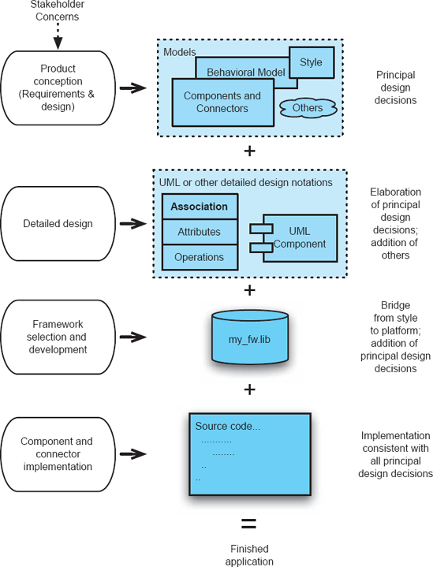
Figura 2-1. Estruturas e a atividade de implementação no contexto do desenvolvimento. As atividades são mostradas na coluna da esquerda; Artefatos estão na coluna central; As notas estão à direita.
Como exemplos, frameworks comuns em uso extensivo são aqueles voltados para suportar a implementação de interfaces de usuário. Tanto as Microsoft Foundation Classes (MFC) quanto a biblioteca Java Swing representam frameworks que fornecem ao usuário widgets comuns de interface e métodos de interação em bibliotecas orientadas a objetos. Mais do que simplesmente fornecer um conjunto de funcionalidades que os usuários podem aproveitar, esses frameworks influenciam fundamentalmente as arquiteturas dos sistemas que os utilizam. Por exemplo, ambos os frameworks (em certa medida) gerenciam concorrência e threading — os próprios frameworks criam e gerenciam os threads de controle responsáveis por coletar eventos de entrada do usuário do sistema operacional e enviá-los para processar código desenvolvido pelo usuário.
Relacionadas a frameworks, como auxílios para auxiliar na implementação de arquiteturas, estão as tecnologias middleware. Middleware existe em várias variedades, algumas das quais oferecem uma ampla gama de serviços, mas, no geral, normalmente suportam a comunicação entre componentes de software. Assim, o middleware facilita a implementação de conectores — os elementos arquitetônicos responsáveis por fornecer comunicação entre os componentes. O desenvolvedor tem total responsabilidade pela implementação da lógica de negócios dos componentes da arquitetura, mas depende do middleware para a implementação dos conectores.
Middleware comumente encontrado inclui CORBA e o DCOM da Microsoft (para suporte à comunicação entre objetos remotos), RPC (para chamadas de procedimentos remotos) e middleware orientado a mensagens (para entrega de mensagens assíncronas entre componentes remotos).
Tecnologias generativas, frameworks e middleware representam, portanto, um espectro de tecnologias genéricas e amplamente utilizadas para auxiliar na implementação fiel de uma arquitetura. Essas tecnologias evoluem de totalmente automáticas para parcialmente automáticas, passando por oferecer suporte na implementação de conectores.
Menos genérico, mas não menos importante, é o reuso de componentes de software, sejam eles comerciais prontos para uso, de código aberto ou softwares proprietários internos. A questão chave dessa reutilização, no que diz respeito à implementação fiel de uma arquitetura, é o grau em que a funcionalidade, interfaces e propriedades não funcionais de um componente candidato a reutilização correspondem às exigidas por uma arquitetura. No (infelizmente) improvável caso de existir uma correspondência perfeita, o trabalho está feito. No caso comum, ou seja, envolvendo algum grau de descompasso, as questões e escolhas são difíceis. Uma estratégia, que preserva a arquitetura conforme especificada, é encapsular o componente pré-existente dentro de uma nova interface para que o componente assim modificado atenda exatamente aos requisitos da arquitetura. Embora essa técnica possa ser bem-sucedida, uma circunstância mais provável é que realizar tal encapsulamento ainda não seja viável economicamente ou tecnicamente. Nesses casos, é preciso tomar uma decisão: revisar a arquitetura de modo a permitir o reuso do componente, ou abandonar esse código pré-existente específico e buscar alternativas ou criar um novo componente do zero. Essa escolha é difícil.
Na ausência de qualquer tecnologia que ajude o desenvolvedor a criar código-fonte fiel à arquitetura, a implementação deve ser desenvolvida manualmente. Nessas circunstâncias, o programador deve confiar na disciplina e grande cuidado, pois isso pode ser a "grande divisão". Na medida em que a implementação difere da arquitetura resultante das atividades de desenvolvimento anteriores, essa arquitetura não caracteriza a aplicação. A implementação possui uma arquitetura: ela é latente, ao contrário do que está documentado. Falha em reconhecer essa distinção:
O Capítulo 9 aborda essas várias questões em detalhes.
ANÁLISE E TESTES
Análise e teste são atividades realizadas para avaliar as qualidades de um artefato. No tradicional waterfall, análises e testes são realizados após o código ser escrito, na fase de teste. Nesse contexto, o artefato examinado é o código; Normalmente, a qualidade avaliada é a correção funcional, embora propriedades como desempenho também possam ser examinadas. Atividades de análise e teste não precisam se limitar a ocorrer após a programação, é claro, e muitos excelentes processos de desenvolvimento integram essas atividades dentro da atividade de desenvolvimento. Enquanto existir um artefato suscetível à análise para uma propriedade definida, essa análise pode prosseguir — seja o artefato um documento de requisitos, uma descrição da estrutura da aplicação ou outra coisa. Uma das vantagens de realizar análises antes da existência do código é a economia de custos: quanto mais cedo um erro for detectado e corrigido, menor será o custo agregado.
Considerando que a detecção precoce de erros é algo positivo, é preciso se perguntar por que a análise e os testes convencionais quase sempre se limitam a testar apenas o código-fonte. Além disso, por que tais testes são realizados apenas com base nas especificações mais básicas, ou seja, os requisitos funcionais do sistema? A resposta quase sempre ocorre devido à ausência de qualquer representação suficientemente rigorosa de uma aplicação além do código-fonte. São necessárias representações rigorosas para que perguntas precisas possam ser feitas e respostas definitivas — preferencialmente por meio de auxílios de análise automatizados.
Uma abordagem centrada em arquitetura e com base técnica para o desenvolvimento de software oferece uma oportunidade significativa para análise precoce e para uma análise aprimorada do código-fonte. Além disso, existe a possibilidade de analisar propriedades além da correção funcional. Nessa abordagem de desenvolvimento, modelos arquitetônicos tecnicamente ricos estão presentes muito antes do código-fonte e, portanto, servem como base e objeto de análises iniciais. (O Capítulo 8 apresentará detalhes substanciais sobre análise arquitetônica, o Capítulo 12 estenderá essa discussão a propriedades não funcionais, e o Capítulo 13 abordará em particular o suporte arquitetônico para segurança e confiabilidade.) Nos poucos parágrafos abaixo, simplesmente descrevemos algumas das abordagens; Os detalhes virão depois que nossa apresentação de arquiteturas e modelos arquitetônicos estiver em uma base mais precisa.
Primeiro, a arquitetura estrutural de uma aplicação pode ser examinada quanto à consistência, correção e exibição das propriedades não funcionais desejadas. Se a arquitetura na qual a implementação se baseia (posteriormente) for de alta qualidade, as perspectivas para uma implementação de alta qualidade aumentam significativamente.
Como um artefato formal, o modelo arquitetônico pode ser examinado quanto à consistência e correção internas: verificações sintáticas do modelo podem identificar, por exemplo, componentes descompatíveis, especificação incompleta de propriedades e padrões de comunicação indesejados. A análise de fluxo de dados pode ser aplicada para determinar incompatibilidades de definição/uso, de forma semelhante a como essa análise é realizada no código-fonte. Mais significativamente, a análise de fluxo pode ser usada para detectar falhas de segurança. Técnicas de verificação de modelos podem analisar problemas com deadlock. Estimativas do tamanho da aplicação final podem ser baseadas na análise da arquitetura. Técnicas de simulação podem ser aplicadas para realizar algumas formas simples de análise dinâmica.
Segundo, o modelo arquitetônico pode ser examinado quanto à consistência com os requisitos. Independentemente de os requisitos terem sido desenvolvidos da forma clássica (ou seja, antes de qualquer desenvolvimento de noções de solução), ou no sentido moderno, em que os dois são desenvolvidos em conjunto, os dois devem ser consistentes. Tal exame pode ser limitado a análises realizadas manualmente se os requisitos forem expressos em linguagem natural. No entanto, tais comparações são essenciais para garantir que as duas especificações estejam em concordância.
Terceiro, o modelo arquitetônico pode ser usado para determinar e apoiar estratégias de análise e teste aplicadas ao código-fonte. A arquitetura, claro, fornece o design do código-fonte, então a consistência entre eles é essencial. Concretamente, como especificação para a implementação, a arquitetura serve como fonte de informação para governar testes baseados em especificações em todos os níveis: nível unitário, subsistema e sistema.
O arquiteto pode priorizar atividades de análise e teste com base na arquitetura, focando as atividades nos componentes e subconjuntos mais críticos. Por exemplo, no desenvolvimento de uma família de produtos de software, atenção especial deve ser dada àqueles componentes que fazem parte de cada membro da família: um erro em um deles afetará todos os produtos. Por outro lado, um componente que implementa apenas uma característica raramente usada e não crítica de um membro da família pode ser considerado como não merecendo nem de longe tanta análise. Testes custam dinheiro, e as organizações precisam ter um meio de determinar as prioridades para seu orçamento de testes; A arquitetura pode servir de base para parte dessa orientação.
De forma semelhante, a arquitetura oferece um meio de levar adiante os resultados das análises de atividades anteriores de testes, com a consequente economia de custos. Por exemplo, se um componente específico for reutilizado em uma nova arquitetura, o grau de seu teste unitário pode ser reduzido se o exame da arquitetura confirmar que o contexto e as condições de uso são iguais (ou mais restritos que) o uso anterior.
A arquitetura pode fornecer orientação e economias no desenvolvimento de harnesses de teste. Harnesses de teste são pequenos programas usados para testar componentes e subconjuntos de aplicações maiores. Eles oferecem ao analista a capacidade de testar de forma conveniente e eficaz as partes internas de uma aplicação. Pode ser difícil, por exemplo, usar entradas em nível de sistema para exercer plena e economicamente as condições de contorno de um componente interno. Por exemplo, se uma arquitetura for projetada para suportar uma família de produtos, e um pequeno conjunto de componentes for alterado para personalizar o produto para um determinado mercado, um taceto de teste pode ser construído para focar os testes nos componentes que compõem o conjunto de mudanças. Cada produto personalizado pode, assim, ter um regime de testes que enfatiza apenas as partes que mudaram.
A arquitetura também pode fornecer orientações para direcionar a atenção do analista aos conectores na implementação de um sistema. Como será discutido no Capítulo 5, os conectores desempenham um papel particularmente importante nas estruturas de alguns sistemas, sendo encarregados de suportar toda a comunicação entre componentes. A arquitetura oferece uma forma eficaz de identificar esses pontos de alavancagem especial e, portanto, pode ajudar a moldar a atividade de análise e testes. Além disso, alguns conectores oferecem oportunidades particularmente eficazes para monitoramento e registro não intrusivo de aplicações, o que pode desempenhar um papel fundamental para ajudar um engenheiro a desenvolver uma compreensão de como um sistema funciona, além de auxiliar na análise e nos testes.
Quarto, o modelo arquitetônico pode ser comparado a um modelo derivado do código-fonte de uma aplicação. Isso é uma forma de verificar sua resposta. Em termos abstratos, suponha que o programa P seja derivado da arquitetura A. Uma equipe separada de engenheiros, sem acesso ao A, poderia, lendo e analisando P, desenvolver um modelo arquitetônico A — um modelo da arquitetura que o P implementa. Se tudo estiver bem, A será consistente com A'. Se não, ou P não implementa fielmente A, ou então A' não reflete fielmente a arquitetura de P. De qualquer forma, uma inconsistência importante pode ser detectada. Essa questão será discutida com mais detalhes no Capítulo 3.
Essa caracterização abstrata não é muito prática, pois provavelmente envolveria um trabalho humano substancial. Mas características específicas das implementações podem ser facilmente extraídas e comparadas com a arquitetura. Por exemplo, é simples extrair um modelo do código-fonte que mostra quais componentes se comunicam com quais outros. Esse padrão de comunicação pode ser comparado com o padrão correspondente na arquitetura e quaisquer discrepâncias observadas. Um exemplo desse tipo de análise aparece no capítulo a seguir.
Como mencionado acima, a consideração substantiva da análise das arquiteturas deve esperar para mais adiante neste texto. Técnicas para representar arquiteturas devem primeiro ser apresentadas (veja o Capítulo 6). Basta observar por enquanto que o desenvolvimento centrado na arquitetura oferece uma variedade de novas e significativas oportunidades para avaliar e, portanto, melhorar a qualidade dos sistemas.
EVOLUÇÃO E MANUTENÇÃO
Evolução de software e manutenção de software — os termos são sinônimos — referem-se a todo tipo de atividade que seguem cronologicamente o lançamento de um aplicativo. Essas variações vão desde correções de bugs até grandes adições de novas funcionalidades e criação de versões especializadas do aplicativo para mercados ou plataformas específicas.
A abordagem típica de engenharia de software para manutenção é em grande parte ad hoc. Em uma situação de melhores práticas, cada tipo de mudança faz com que o processo de software retorne à fase em que a questão geralmente é considerada, e o processo de desenvolvimento recomeça a partir desse ponto. Assim, se uma nova funcionalidade for solicitada, isso requer retornar à fase de análise de requisitos e então avançar em sequência a partir daí. Se a mudança for considerada uma correção de bug menor, talvez apenas a fase de codificação e seus sucessores sejam revisados.
O principal risco apresentado pela evolução é a degradação da qualidade da aplicação. O controle intelectual da aplicação pode se degradar se mudanças forem feitas em qualquer lugar, pelos meios mais convenientes. Na prática, é exatamente isso que acontece. Em vez de seguir as melhores práticas, é comum que apenas a fase de codificação seja revisada. O código é modificado da forma que for mais fácil. Com o tempo, a qualidade da aplicação se degrada significativamente, e fazer mudanças sucessivas torna-se cada vez mais difícil à medida que dependências complexas entre mudanças anteriores mal pensadas vêm à tona.
Uma abordagem centrada na arquitetura para o desenvolvimento oferece uma base sólida para uma evolução eficaz. A chave é um foco sustentado em um modelo arquitetônico explícito, substancial, modificável e fiel.
O processo evolutivo pode ser entendido como consistindo nas seguintes etapas:
As motivações para a evolução são muitas, como mencionado acima. Damos atenção especial à criação de novas versões de um produto. Essa motivação raramente aparece em tratamentos tradicionais da evolução do software, mas é comum na indústria comercial de software. Esse tipo de mudança levanta o tema das famílias de produtos de software e, como discutido no Capítulo 1, o suporte a famílias de produtos pode ser uma força particular das abordagens centradas na arquitetura.
Seja qual for a motivação para a evolução, o próximo passo é a avaliação. A mudança proposta, assim como a aplicação existente, devem ser examinadas para determinar, por exemplo, se a mudança desejada pode ser alcançada e, em caso afirmativo, como. Em outras palavras, essa etapa exige um entendimento profundo do produto existente.
É nesse ponto que a abordagem centrada na arquitetura surge como uma estratégia de engenharia superior. Se um modelo arquitetônico explícito que seja fiel à implementação estiver disponível, então a compreensão e a análise podem avançar de forma eficiente. Um bom modelo arquitetônico oferece a base para manter o controle intelectual da aplicação. Se não houver um modelo arquitetônico disponível, ou se o modelo existente não for consistente com a implementação, então a atividade de entender a aplicação deve prosseguir de forma de engenharia reversa. Ou seja, entender a aplicação exigirá exame do código-fonte e recuperação de um modelo que forneça uma base intelectual adequada para determinar como as mudanças necessárias podem ser feitas. Isso consome tempo e é caro, especialmente quando os profissionais envolvidos são novos no projeto.
Erros na manutenção frequentemente surgem por prejudicar essa atividade. Se não houver compreensão suficiente da estrutura existente, então os planos para modificá-la provavelmente fracassarão — nos pontos de mal-entendidos. Em contraste, um bom modelo arquitetônico oferece uma base de princípios para decidir se uma modificação desejada é razoável. Uma mudança proposta pode ser considerada muito cara ou prejudicial para propriedades do sistema para justificar o desenvolvimento. Somente com um bom domínio intelectual da arquitetura existente, bem como da mudança proposta, tal decisão pode ser tomada de forma sensata. O efeito líquido dessa abordagem baseada em princípios será a manutenção da integridade arquitetônica e a atenuação da volatilidade dos requisitos.
O próximo estágio na evolução é o desenvolvimento de uma abordagem para satisfazer qualquer requisito que motivou a atividade. Vários caminhos de ação provavelmente serão identificados, então é necessário um passo adicional de escolha entre as alternativas. Uma vez que um curso de ação é determinado, ele deve ser colocado em ação. Para mudanças de importância mesmo moderada, o primeiro artefato a ser modificado deve ser o modelo da arquitetura. Em particular, se a mudança necessária se refere à arquitetura, então mudar a arquitetura é o ponto de partida. Após alterar a arquitetura, podem ser feitas alterações correspondentes no código. O ponto crítico, claro, é manter a consistência entre a arquitetura e a implementação. Ferramentas podem ajudar nessa tarefa.
Um erro a evitar é mudar o código primeiro e depois planejar revisar a descrição arquitetônica para corresponder. Seguir essa boa intenção raramente acontece.
Fazer as várias mudanças necessárias para acomodar o que motivou a atividade de evolução não deve ser considerado completo até que todos os elementos de uma aplicação — arquitetura e código — sejam consistentes. A razão é simples: necessidades adicionais para evolução serão identificadas no futuro. Se a aplicação for deixada inconsistente, isso sabotará essas futuras atividades evolutivas.
O software vai evoluir, esteja ou não usando um processo de desenvolvimento centrado na arquitetura. A questão é se tal evolução prosseguirá de forma eficiente e se resultará na degradação da qualidade e integridade intelectual do produto. A arquitetura fornece a base para a manutenção da coerência, qualidade e controle. Essas questões são discutidas com mais detalhes no Capítulo 14.
PROCESSOS
Um tema central deste capítulo tem sido que as preocupações arquitetônicas permeiam adequadamente toda a atividade de desenvolvimento e evolução de software. O conjunto de decisões que compõe a arquitetura se forma em conjunto com os requisitos e continua a se expandir por meio da manutenção. A arquitetura, portanto, está sob constante mudança.
Arquitetura, correspondentemente, não é uma fase de um processo de engenharia de software; é um corpo central e em evolução de informações. De fato, o desenvolvimento desse corpo de informações pode remontar e se estender a aplicações anteriores e outras aplicações.
A centralidade da arquitetura no desenvolvimento de software, e os insights que surgem do foco em arquitetura, infelizmente ficam totalmente obscurecidos nas caracterizações tradicionais da atividade de desenvolvimento de software. Discussões tradicionais sobre processos de software tornam as atividades do processo o ponto central; A arquitetura (e, portanto, o produto!) frequentemente não aparece em lugar algum. Igualmente ruim, os processos padrão de desenvolvimento de software incentivam, senão impõem, divisões marcantes entre vários tipos de atividades de desenvolvimento. Por exemplo, os modelos de cachoeira e espiral separam a atividade de determinação de requisitos da atividade de desenvolvimento de projetos. Como vimos, tais limites não são justificados e, de fato, são contraproducentes.
Simplesmente afirmar, porém, que os processos de desenvolvimento de software devem ser centrados na arquitetura não significa de forma alguma que exista uma única maneira correta de prosseguir no desenvolvimento de aplicações. Diferentes organizações e engenheiros vão querer adotar estratégias específicas para tirar o melhor proveito de suas forças e preferências organizacionais. Igualmente importante, diferentes ambientes de desenvolvimento (por exemplo, conhecimento, desenvolvimentos pré-existentes, bibliotecas de componentes, arquiteturas codificadas) exigirão que diferentes destaques sejam dadas aos diversos tipos de atividades de desenvolvimento, e essas atividades variarão no tempo necessário para sua conclusão.
Comparar, ou até mesmo entender, diferentes estratégias para desenvolvimento de software requer um meio de descrever essas estratégias. Um bom formalismo descritivo para caracterizar estratégias fornecerá uma forma não apenas de mostrar quais atividades estão ocorrendo e quando, mas também dará destaque adequado e eficaz ao papel central da arquitetura (e de todos os outros artefatos do projeto) na formação do produto de software. Assim, agora apresentamos a visualização turbina do desenvolvimento de software e a usamos para retratar uma variedade de estratégias de desenvolvimento.
A Visualização da Turbina
A visualização da turbina é um meio de representar um conjunto integrado de atividades de desenvolvimento de software nas quais o papel central da arquitetura de software na evolução do produto pode ser mostrado de forma proeminente — se é que ele realmente é central. A visualização considera os seguintes aspectos independentes do desenvolvimento de software:
A visualização também mostra uma variedade de fatores combinados, como investimento (esforço acumulado ao longo de fases demarcadas pelo tempo).
Espacialmente, a visualização consiste em um conjunto de anéis de largura e espessura variáveis empilhados ao redor de um núcleo. O eixo do núcleo é o tempo; o núcleo representa o produto de software (a arquitetura mais todos os outros artefatos que compõem o produto); Os anéis representam fases de atividade demarcadas pelo tempo — todos os aspectos do desenvolvimento ou evolução.
A cascata simples e unidirecional é tão simples na visualização tridimensional da turbina quanto em sua representação tradicional — exceto que o papel do produto de software agora é evidente. Um processo em cascata nominal é mostrado em perspectiva tridimensional na Figura 2-2. Uma vista lateral anotada do mesmo processo é ilustrada na Figura 2-3.
O anel inferior do exemplo da turbina em cascata começa com um núcleo nulo, consiste unicamente na atividade de análise de requisitos e termina em t 1 com um núcleo que consiste exclusivamente no documento de requisitos. O segundo anel começa em t 2, consiste exclusivamente na atividade de projeto e termina em t 3, com o núcleo agora consistindo tanto no documento de requisitos (inalterado desde t 1) quanto no documento de projeto. O terceiro anel consiste apenas na atividade de codificação, e o quarto exclusivamente na atividade de teste. Cada anel adiciona um elemento a mais ao núcleo. O valor agregado do modelo da turbina é que, ao retratar o núcleo em crescimento, o conjunto de elementos existentes do produto fica claro. A fase de testes, por exemplo, faz referência visível não apenas ao sujeito dos testes (o código), mas também aos requisitos que o código deve cumprir — incluindo quaisquer testes de aceitação desenvolvidos durante a fase de requisitos.
Uma seção transversal mostra o estado do projeto em um dado momento. A área do anel é proporcional ao número de horas de trabalho atualmente investidas no projeto. A área do núcleo indica o conteúdo do produto naquele mesmo momento. Sub-regiões do núcleo mostram o desenvolvimento relativo de diferentes partes do produto. Um exemplo é mostrado na Figura 2-4, no tempo t i da Figura 2-3. A única atividade é o Design e o núcleo consiste apenas nos dois documentos mostrados.
A espessura de um anel denota o período de tempo durante o qual as (possivelmente múltiplas atividades simultâneas) desse anel estão ativas, ou seja, sua duração. Consequentemente, o volume de um anel (espessura multiplicada pela área) representa o investimento feito durante esse anel: o produto do tempo em que o anel esteve ativo e o investimento feito durante esse anel. (Anéis não precisam ter a mesma área de seção transversal em t i como fazem no tempo t i+1, mas vamos fazer essa suposição simplificadora por enquanto.)
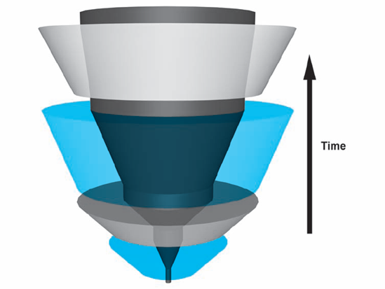
Figura 2-2. O modelo da cachoeira unidirecional representado por uma turbina, mostrado de uma perspectiva inclinada.
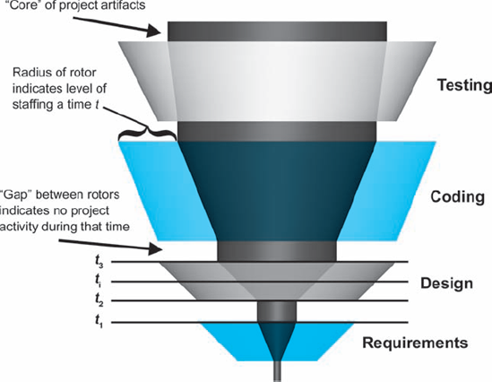
Figura 2-3. Vista lateral, anotada, do processo simples representado na Figura 2.2
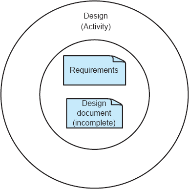
Figuras 2-4. Seção transversal da turbina a partir da Figura 2-3 no tempo t i
Nem todos os projetos ocorrem de forma ininterrupta, então intervalos entre anéis representam períodos de inatividade em um projeto. Durante esses intervalos, o núcleo permanece nominalmente constante — embora, se os dados do projeto se perderem, o núcleo encolha correspondentemente. Anéis podem ser divididos em subáreas, cada uma representando um tipo de atividade em andamento naquele momento. As atividades apresentadas nas subáreas são simultâneas. O tamanho relativo das subáreas denota a parcela do trabalho direcionada a esse tipo de atividade naquele momento específico.
Uma ilustração mais complicada e realista, que envolve múltiplas atividades simultâneas, é mostrada na Figura 2-5; uma vista lateral para este projeto nominal é mostrada nas Figuras 2-6.
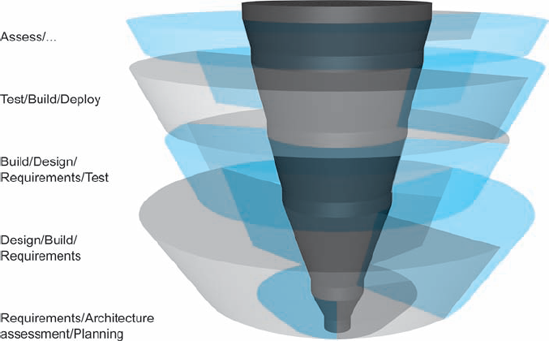
Figuras 2-5. Exemplo de visualização de turbina, mostrada em uma perspectiva tridimensional, com anéis sombreados por tipo de atividade. A transparência é usada para permitir a visualização de atividades que de outra forma estariam obscurecidas.
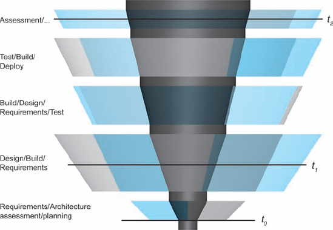
Figuras 2-6. Vista lateral do projeto mostrada na Figura 2-5.
A seção transversal S 0, mostrada na Figura 2-7, representa o estado do projeto em seu início. O diâmetro do núcleo do projeto é significativo, representando conhecimento e recursos substanciais herdados de projetos anteriores. As atividades no momento t 0 incluem avaliação de arquitetura (isto é, avaliação de arquiteturas de projetos anteriores), análise de requisitos e planejamento de projetos.
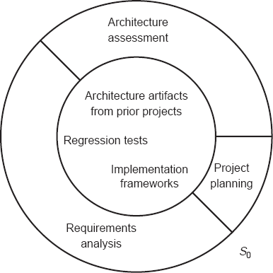
Figuras 2-7. Seção transversal da turbina no tempo t 0.
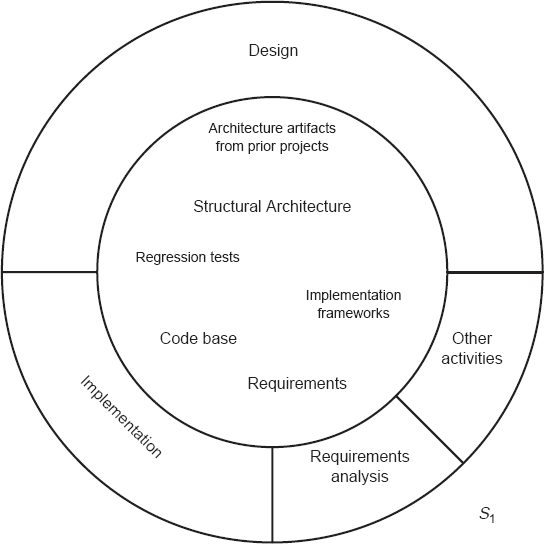
Figuras 2-8. Seção transversal da turbina no tempo t 1.
A seção transversal S 1, mostrada na Figura 2-8, representa o estado do projeto no tempo t 1. O núcleo do projeto cresceu significativamente, e subelementos específicos do núcleo são mostrados. A mistura relativa das atividades em t 1 também mudou: uma preponderância da atividade é dedicada ao design da estrutura da aplicação. Uma pequena quantidade de análise de requisitos ainda está ativa, e alguma implementação está em andamento.
A seção transversal S n, mostrada na Figura 2-9, representa o estado do projeto próximo ao momento de sua conclusão formal: O núcleo mostra uma arquitetura robusta, implementação, processos de implantação, scripts de teste, resultados de teste e assim por diante. O nível de atividade é baixo, com as atividades restantes focadas em capturar as lições aprendidas.
Visto como um todo (Figura 2-5), é evidente que o propósito dos anéis é construir o núcleo. Em outras palavras, o objetivo das atividades de desenvolvimento é criar o produto, em todos os seus diversos detalhes. Esses detalhes e estruturas são abundantes ao final das atividades de desenvolvimento. Isso também destaca como uma organização sábia deve tratar esse núcleo: ele é um ativo composto de tamanho e valor consideráveis, e deve ser gerenciado, após o projeto, de acordo.
Antes de continuar, alguns comentários sobre a analogia usada na nomeação da visualização são necessários. Turbinas são, claro, os motores que impulsionam aeronaves, geram energia hidrelétrica e alimentam inúmeros outros dispositivos. O núcleo dessas turbinas é o fluido que flui através delas. Com turbinas a jato, o fluido é ar; Os "anéis" de uma turbina a jato incluem os compressores com suas pás do ventilador, cuja função é comprimir o ar, empurrando-o para dentro da câmara de combustão, onde o combustível é adicionado e inflamado. Outros anéis atrás da câmara de combustão contribuem para o processo geral, no qual o ar, agora em grande volume e alta velocidade, sai do motor.
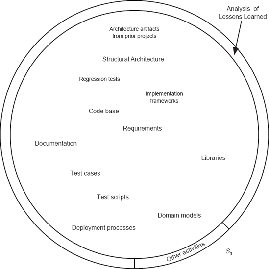
Figuras 2-9. Seção transversal da turbina no tempo t n.
A analogia com o desenvolvimento de software é apenas leve e não deve ser muito pressionada. Mas o produto é o foco da turbina; cada anel e elemento contribui para esse produto. O ar flui pela turbina e é tocado por cada um dos vários anéis. O mesmo acontece com o produto de software e a arquitetura, em particular, o núcleo do desenvolvimento de software. Ele é tocado e (espera-se) aprimorado por cada aspecto do desenvolvimento de software. Em contraste com uma turbina física, porém, cada anel de desenvolvimento de software realmente contribui para o núcleo, não apenas o aquece. (Outras dificuldades — ou vantagens — da analogia, como os anéis girando em círculos e o produto ser apenas ar quente, são estritamente não autorizadas!)
Exemplos de representações de processos
Dois exemplos adicionais são mostrados agora, onde o uso da técnica de visualização de turbinas destaca aspectos distintos dessas abordagens para o desenvolvimento de software.
Um Projeto Robusto Baseado em Arquitetura de Software
Específica para Domínio
A Figura 2-10 mostra uma visualização de turbina de um projeto nocional baseado em uma arquitetura de software pré-existente específica de domínio, ou seja, um projeto semelhante ao exemplo da televisão Philips do Capítulo 1. No início do projeto, o núcleo é bastante grande; Ele contém uma infinidade de artefatos reutilizáveis de projetos anteriores. As atividades são, portanto, (1) avaliar os artefatos para garantir que o projeto atual se encaixe nas restrições impostas por eles, (2) parametrizar esses artefatos para atender às necessidades do novo projeto e realizar qualquer personalização necessária, e (3) integrar, avaliar e implantar o produto.
Desenvolvimento Ágil
A visualização da turbina pode ser usada na análise de abordagens alternativas para o desenvolvimento de software. Por exemplo, a Figura 2-11 mostra um processo de desenvolvimento ágil nocional. Processos ágeis são positivos ao mostrar e enfatizar a concorrência entre uma variedade de tipos de atividades de desenvolvimento; Elicitação de requisitos e desenvolvimento de testes, por exemplo. À medida que o desenvolvimento avança, essas atividades não cessam, por exemplo, uma vez iniciado o desenvolvimento do código. De fato, todas essas atividades continuam ao longo do projeto.
Como indica o núcleo fino do modelo de turbina, entretanto, o processo ágil nega o desenvolvimento de qualquer arquitetura explícita; para o desenvolvedor ágil, o código é a arquitetura. A visualização indica que o processo ágil começa com um núcleo desprovido de qualquer arquitetura e termina de forma semelhante. Um grande corpo de código pode estar presente, junto com, talvez, documentos de requisitos ou guias do usuário, mas não há registro explícito das decisões fundamentais de projeto, como o estilo arquitetônico da aplicação.
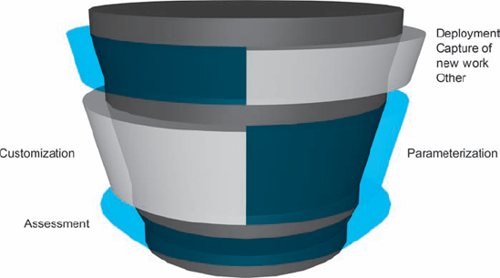
Figura 2-10. Um processo de desenvolvimento baseado em uma arquitetura de software específica de domínio existente e biblioteca de reutilização.
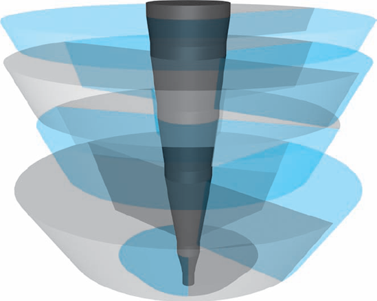
Figuras 2-11. Visualização de turbina de um processo de desenvolvimento ágil nocional.
Os problemas dessa abordagem ficam claros quando um projeto subsequente é necessário. Ou seja, se em algum momento após o primeiro projeto ágil concluir seu desenvolvimento, um projeto subsequente for necessário para que a aplicação atenda a alguma nova demanda. A menos que a mesma equipe de desenvolvimento — com excelente memória — seja empregada no projeto subsequente, pode-se antecipar um modelo inicial de projeto, como mostrado na Figura 2-12. Em particular, será necessário um anel significativo de atividade no início do projeto para simplesmente entender a base de código existente e recuperar parcialmente a arquitetura latente, permitindo que o planejamento de como atender às novas necessidades possa avançar.
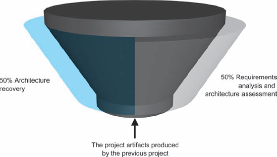
Figuras 2-12. Parte inicial de um modelo de turbina de um processo ágil de fase 2.
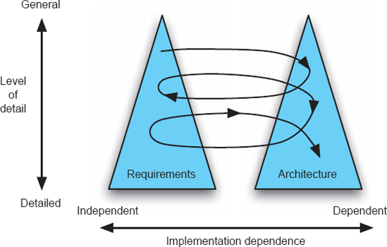
Figuras 2-13. Modelo de desenvolvimento Twin Peaks. © IEEE 2001.
Outros Processos e Modelos de Processos
Diversos pesquisadores e organizações promoveram processos que, em maior ou menor grau, mostram o papel especial da arquitetura no desenvolvimento. Um dos melhores deles é o modelo Twin Peaks, Nuseibeh do Professor Bashar Nuseibeh (Nuseibeh 2001). Twin Peaks enfatiza o co-desenvolvimento de requisitos e arquiteturas, elaborando detalhes de forma incremental. O modelo está ilustrado na Figura 2-13, que é derivada do artigo Twin Peaks.
Fica deixado como um exercício para o leitor criar uma visualização turbinada do processo Twin Peaks mostrado na figura. Também deve ser notado que o trabalho de Twin Peaks representa o trabalho recente em engenharia de requisitos, que agora está dando muito mais destaque ao papel do design e das arquiteturas existentes na atividade de concepção do produto.
Lei e Arquitetura de Software de Brooks
"Lei de Brooks: Adicionar pessoas a um projeto de software tardio o torna mais tarde."
Esse ditado é um dos mais conhecidos na engenharia de software. No entanto, as razões pelas quais isso é tão comum raramente são explicadas. Fred Brooks apresentou esses motivos em uma entrevista:
"A lei de Brooks depende muito da quantidade de informações que precisam ser comunicadas. Então, o argumento é que, se você adiciona pessoas a um projeto que já sabe que está atrasado, o que significa que você está pelo menos no meio do projeto, precisa reparticionar o trabalho. Isso já é um trabalho em si mesmo: Decidir quem vai fazer o quê significa que, em vez de dividir a coisa nas unidades em que você a dividiu, você tem que dividir em mais unidades. Às vezes isso pode ser feito subdividindo as unidades existentes, mas às vezes você precisa mudar os limites."
(Fred Brooks, citado na Fortune, 12 de dezembro de 2005.)
Impactos adicionais incluem o treinamento das novas pessoas na equipe — isso consome o tempo e a energia da equipe atual, afastando-os do trabalho produtivo. Depois, quando as pessoas novas começam a trabalhar, elas são relativamente improdutivas no começo e provavelmente cometem erros.
Note que Brooks não disse que sua lei é verdadeira porque temos processos imaturos ou capacidade de gestão ruim. A lei é verdadeira porque a substância intelectual do software é profunda e pesada. Uma perspectiva centrada na arquitetura sobre desenvolvimento, portanto, oferece alguma vantagem para lidar com problemas de atrasos de cronograma e gerenciamento de projetos: fornece uma base tecnicamente substancial para raciocinar sobre o produto nascente que está em um nível de abstração mais alto do que o código-fonte, e fornece um veículo para transmitir aos novos membros do projeto as principais decisões de design que caracterizam o sistema.
ASSUNTO FINAL
Este capítulo mostrou como uma visão adequada da arquitetura de software afeta todos os aspectos das atividades clássicas de engenharia de software e reorienta essas atividades. Qualquer profissional pode ter seu trabalho informado e alterado por uma compreensão da arquitetura de software, para benefício do projeto. Em resumo,
Apesar desses insights, tentar apropriar-se e aplicar essas ideias sem mais detalhes e suporte técnico é difícil e está sujeito às limitações da organização e autodisciplina do designer. O objetivo dos capítulos seguintes é fornecer a base representacional para descrever arquiteturas de forma eficaz e a base tecnológica para incorporar a arquitetura em uma abordagem profissional para o desenvolvimento de aplicações de software. O capítulo 3 prossegue colocando os conceitos em uma base definicional firme; O capítulo 4 então prossegue descrevendo como projetar sistemas sob uma perspectiva arquitetônica.
O Caso de Negócio para o Desenvolvimento Centrado na
Arquitetura
As vendas de um produto geram receita para a empresa. Para que uma empresa cresça, as vendas normalmente precisam se expandir oferecendo uma variedade de produtos. Para que uma empresa mantenha sua base de clientes, ela deve estar receptiva a pedidos de versões alteradas de produtos atuais, bem como a novas ofertas.
Embora essas observações sejam quase triviais, surge a questão do que permite a uma empresa realizar essas tarefas com sucesso por um período prolongado. Novamente, a resposta quase trivial é um foco sustentado nos processos da empresa, assim como um foco nos produtos da empresa.
O que é notável é que, nos últimos vinte anos, esse foco duplo parece ter se perdido em um grande número de organizações de software. Para muitos, o foco tem sido exclusivamente no processo e sua melhoria. Os resultados dessa miopia têm sido bastante mistos. Claramente, houve muitos exemplos de empresas que melhoraram seus processos e também tiveram sucesso na produção de produtos de alta qualidade e bem-sucedidos. Mas também existem empresas — muito menos divulgadas — que alcançaram altos níveis de melhoria de processos, mas que não conseguem produzir produtos bem-sucedidos e líderes de mercado. A correlação entre melhoria de processos e sucesso do produto não é absoluta, para dizer o mínimo.
Em contraste, considere a relação entre a arquitetura de um produto e sua qualidade. É difícil ter uma arquitetura ruim e um produto excelente, um produto que permanece líder após versões e lançamentos sucessivos. Da mesma forma, é difícil ter uma arquitetura ótima e um produto ruim. A menos que a atividade de implementação seja profundamente falha, uma grande arquitetura — uma que surge de um design que considera todas as preocupações dos stakeholders e que demonstra clareza intelectual e visão — normalmente resultará em ótimos produtos.
A correlação entre uma ótima arquitetura e uma família de produtos bem-sucedida talvez seja ainda mais forte. Uma estratégia econômica para entregar uma boa família de produtos exige coerência intelectual entre os membros da família e economia de custos resultante das semelhanças e da infraestrutura compartilhada em toda a linha.
Assim, uma abordagem centrada na arquitetura para o desenvolvimento de software dá prioridade aos produtos vendidos e que geram receita da empresa. Se o processo for permitido se tornar o foco principal, então o foco está em algo que não gera receita intrinsecamente para a empresa. Um bom processo é um ativo — um recurso crítico — mas a arquitetura, no coração de grandes produtos, deve ser a principal atenção.
PERGUNTAS DE REVISÃO
EXERCÍCIOS
LEITURA ADICIONAL
Apresentações substanciais de engenharia de software e processos de desenvolvimento de software podem ser encontradas em vários excelentes livros didáticos, como os de Ghezzi et al. (Ghezzi, Jazayeri e Mandrioli 2003) e van Vliet (van Vliet 2000).
A resolução de problemas e o design em geral foram abordados por muitos autores. Design é o foco do Capítulo 4, e uma variedade de leituras está listada no final desse capítulo. O livro original de Polya sobre resolução de problemas — que foca principalmente na resolução de problemas em matemática — está facilmente disponível (Polya 1957). Algumas reflexões gerais sobre design e o processo de design incluem o clássico de Schön, The Reflective Practitioner (Schön 1983), o livro perspicaz de Don Norman sobre The Design of Everyday Things (Norman 2002) e o tratamento de Nelson sobre as tradições e práticas do design (Nelson e Stolterman 2003). Para o engenheiro que há em todos nós, os livros de Henry Petroski são um deleite, explorando o design de coisas desde pontes até clipes, mas são especialmente valiosos ao revelar o papel do fracasso na realização de novos projetos (Petroski 1985, 1992, 1994, 1996). Várias histórias detalhadas sobre como o design das aeronaves F-15, F-16 e A-10 foi, ou quase foi, subvertido devido à perda de foco na arquitetura central são contadas em Boyd: The Fighter Pilot Who Changed the Art of War (Coram 2002). A história do design das máquinas de lavar, mencionada brevemente no texto, é apresentada online em diversos sites, incluindo www.sciencetech.technomuses.ca/english/collection/wash1.cfm e www.historychannel.com/exhibits/hometech/wash.html.
Uma excelente apresentação do pensamento contemporâneo sobre o processo de análise de requisitos pode ser encontrada nos trabalhos de Jackson, van Lamsweerde e Nuseibeh (Jackson 1995; Jackson 2001; Nuseibeh e Easterbrook 2000; van Lamsweerde 2000). O design orientado a objetos é explicado na maioria dos livros didáticos modernos de engenharia de software, como os listados acima. A análise e os testes de software são explicados em detalhes no livro didático de Pezzè e Young (Pezzè e Young 2007).
O modelo de desenvolvimento Twin Peaks foi apresentado em um breve artigo na IEEE Computer (Nuseibeh 2001). Trabalhos posteriores exploraram mais profundamente a relação entre requisitos e arquitetura; veja, por exemplo, (Rapanotti et al. 2004).
[3] Por outro lado, só porque uma empresa concede um título como "arquiteto-chefe de software" a alguém, não significa necessariamente que o indivíduo possua credenciais específicas ou capacidade de criar de forma responsável arquiteturas de software boas ou eficazes, ou mesmo de saber algo sobre tecnologia de software.
[4] No entanto, a considerável inspiração que pode surgir ao considerar uma analogia de um domínio diferente do conhecimento não deve ser subestimada. Um exemplo por excelência é a invenção do hipertexto: Vannevar Bush, em seu artigo "Como Podemos Pensar" (Bush 1996), concebeu a noção de hipertexto por meio de analogia explícita com como o cérebro humano opera associativamente. Sua concepção de um dispositivo para criar e recordar informações de forma associativa, no entanto, não tinha nada a ver com biologia ou células, mas sim com extrapolações a partir de dispositivos mecânicos dos anos 1940.